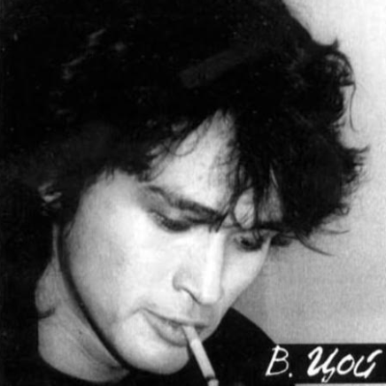
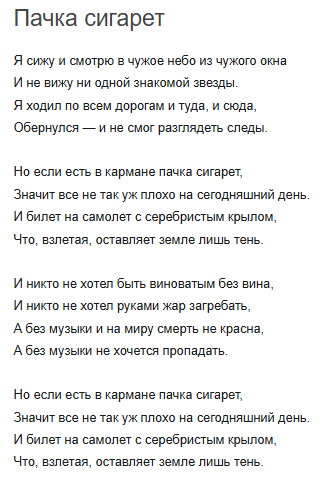
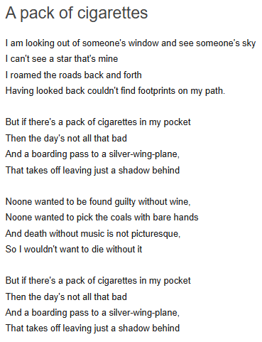

Track 5: Пачка сигарет - Kino
Information:
Song Name: Пачка сигарет
Artist(s): Kino
Extra Info: Sang by Victor Tsoi
Cover:
Video:
Lyrics:
 Analysis / Reasoning:
The song Pachka Cigaret by Kino describes the struggle that Holden is going through during his time getting drunk with Ernie and during his addiction to cigarettes. The third line “I roamed the roads back and forth, Having looked back couldn’t find footprints on my path.” (Kino 3-4) describes Holden’s journey through the city blocks of New York City. “I walked all the way back to the hotel. Forty-one gorgeous blocks. I didn’t do it because I felt like walking or anything. … You wouldn’t even have known it had snowed at all. There was hardly any snow on the sidewalks.” (Salinger 98). Holden describes his love for walking, and by doing so we get a key detail about the snow on the sidewalk. If there was a lot of snow, he would see his footprints trailing behind him. However, because Holden includes the intricate detail of no visible snow, we know that he doesn’t see any footprints. The next stanza of the songs describes the narrator's addiction to cigarettes (in fact, most of Victor Tsoi’s music covers include a photo of himself with a cigarette in his mouth), and the stanza also describes a “boarding pass to a silver-wing-plane.” (Kino 6-7) “Finally, I sat up in bed and smoked another cigarette. It tasted lousy. I must’ve smoked around two packs since I left Pencey.” (Salinger 112) Cigarettes are Holden’s way out of stress. Just like Kino, Holden needs to smoke to have a good day. Furthermore, the “boarding pass” represents Holden’s suicidal thoughts. At any point, Holden can “board the plane” and leave the world, but Holden realizes throughout the novel that he will leave a shadow; an empty space behind. He realizes that Phoebe will miss him and that he shouldn’t run away. He describes “I felt sorry as hell for my mother and father. Especially my mother, because she still isn’t over my brother Allie yet.” (Salinger 171) Similarly, while running away to the ranch represents Holden’s suicidal thoughts, the boarding pass represents Holden’s thoughts of death. The third stanza has themes of death, describing “Noone wanted to be found guilty without wine, … and death without music is not picturesque, so I wouldn’t want to die without it.” (Kino 9-12) The wine directly corresponds to Holden’s alcohol problem. Several times throughout the novel, Holden either expresses interest in alcohol or gets blackout drunk. Additionally, when Holden thinks about death, “It rained on his lousy tombstone, and it rained on the grass on his stomach. It rained all over the place.” (Salinger 172). Right before this point in the novel, Holden drops the record that he bought for Phoebe. Like the lyric, Holden doesn’t want to die without “music” (the record), so he continues on living. Both Holden’s journey and Pachka Cigaret place a focus on societal pressures; society stresses some people out so much that they search for an escape: sometimes in cigarettes, alcohol, and drugs.